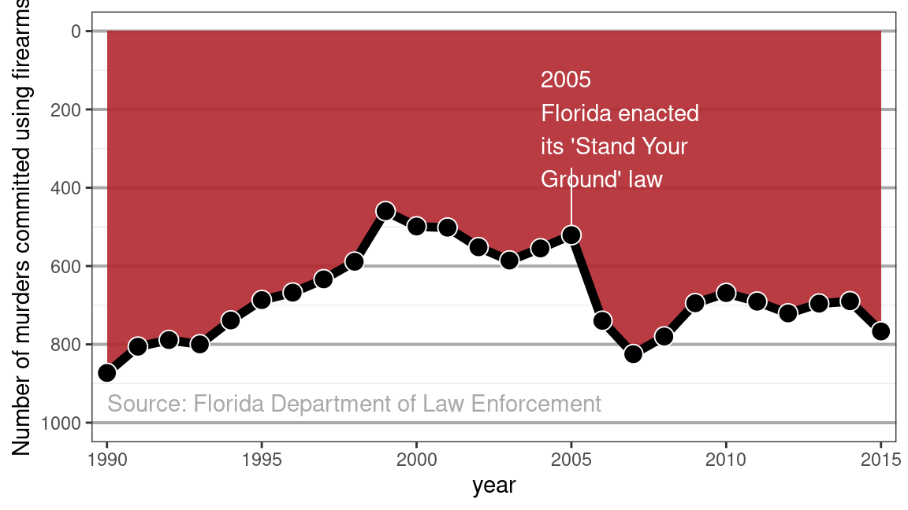
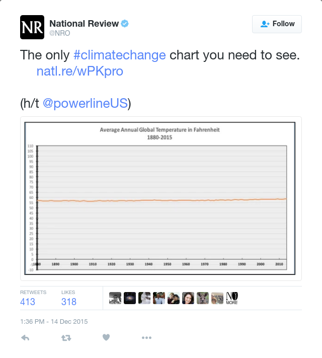

Chapter 8 Data science ethics
8.1 Introduction
Work in data analytics involves expert knowledge, understanding, and skill. In much of your work, you will be relying on the trust and confidence that your clients place in you. The term professional ethics describes the special responsibilities not to take unfair advantage of that trust. This involves more than being thoughtful and using common sense; there are specific professional standards that should guide your actions. Moreover, due to the potential that their work may be deployed at scale, data scientists must anticipate how their work could used by others and wrestle with any ethical implications.
The best-known professional standards are those in the Hippocratic Oath for physicians, which were originally written in the 5th century B.C. Three of the eight principles in the modern version of the oath (Wikipedia 2016) are presented here because of similarity to standards for data analytics.
- “I will not be ashamed to say ‘I know not,’ nor will I fail to call in my colleagues when the skills of another are needed for a patient’s recovery.”
- “I will respect the privacy of my patients, for their problems are not disclosed to me that the world may know.”
- “I will remember that I remain a member of society, with special obligations to all my fellow human beings, those sound of mind and body as well as the infirm.”
Depending on the jurisdiction, these principles are extended and qualified by law. For instance, notwithstanding the need to “respect the privacy of my patients,” health-care providers in the United States are required by law to report to appropriate government authorities evidence of child abuse or infectious diseases such as botulism, chicken pox, and cholera.
This chapter introduces principles of professional ethics for data science and gives examples of legal obligations, as well as guidelines issued by professional societies. There is no official data scientist’s oath—although attempts to forge one exist (National Academies of Science, Engineering, and Medicine 2018). Reasonable people can disagree about what actions are best, but the existing guidelines provide a description of the ethical expectations on which your clients can reasonably rely. As a consensus statement of professional ethics, the guidelines also establish standards of accountability.
8.2 Truthful falsehoods
The single best-selling book with “statistics” in the title is How to Lie with Statistics by Darrell Huff (Huff 1954). Written in the 1950s, the book shows graphical ploys to fool people even with accurate data. A general method is to violate conventions and tacit expectations that readers rely on when interpreting graphs. One way to think of How to Lie is a text to show the general public what these tacit expectations are and give tips for detecting when the trick is being played on them. The book’s title, while compelling, has wrongly tarred the field of statistics. The “statistics” of the title are really just “numbers.” The misleading graphical techniques are employed by politicians, journalists, and businessmen: not statisticians. More accurate titles would be “How to Lie with Numbers,” or “Don’t be misled by graphics.”
Some of the graphical tricks in How to Lie are still in use. Consider these three recent examples.
8.2.1 Stand your ground
In 2005, the Florida legislature passed the controversial “Stand Your Ground” law that broadened the situations in which citizens can use lethal force to protect themselves against perceived threats. Advocates believed that the new law would ultimately reduce crime; opponents feared an increase in the use of lethal force. What was the actual outcome?
The graphic in Figure 8.1 is a reproduction of one published by the news service Reuters on February 16, 2014 showing the number of firearm murders in Florida over the years. Upon first glance, the graphic gives the visual impression that right after the passage of the 2005 law, the number of murders decreased substantially. However, the numbers tell a different story.
{kind=link}

Figure 8.1: Reproduction of a data graphic reporting the number of gun deaths in Florida over time. The original image was published by Reuters.
The convention in data graphics is that up corresponds to increasing values. This is not an obscure convention—rather, it’s a standard part of the secondary school curriculum. Close inspection reveals that the \(y\)-axis in Figure 8.1 has been flipped upside down—the number of gun deaths increased sharply after 2005.
8.2.2 Global temperature
Figure 8.2 shows another example of misleading graphics: a tweet by the news magazine National Review on the subject of climate change. The dominant visual impression of the graphic is that global temperature has hardly changed at all.

Figure 8.2: A tweet by National Review on December 14, 2015 showing the change in global temperature over time. The tweet was later deleted.
There is a tacit graphical convention that the coordinate scales on which the data are plotted are relevant to an informed interpretation of the data. The \(x\)-axis follows the convention—1880 to 2015 is a reasonable choice when considering the relationship between human industrial activity and climate. The \(y\)-axis, however, is utterly misleading. The scale goes from \(-10\) to 110 degrees Fahrenheit. While this is a relevant scale for showing season-to-season variation in temperature, that is not the salient issue with respect to climate change. The concern with climate change is about rising ocean levels, intensification of storms, ecological and agricultural disruption, etc. These are the anticipated results of a change in global average temperature on the order of 5 degrees Fahrenheit. The National Review graphic has obscured the data by showing them on an irrelevant scale where the actual changes in temperature are practically invisible. By graying out the numbers on the \(y\)-axis, the National Review makes it even harder to see the trick that’s being played. The tweet was subsequently deleted.
8.2.3 COVID-19 reporting
In May 2020, the state of Georgia published a highly misleading graphical display of COVID-19 cases (see Figure 8.3). Note that the results for April 17th appear to the right of April 19th, and that the counties are ordered such that all of the results are monotonically decreasing for each reporting period. The net effect of the graph is to demonstrate that confirmed COVID cases are decreasing, but it does so in a misleading fashion. Public outcry led to a statement from the governor’s office that moving forward, chronological order would be used to display time.

Figure 8.3: A recreation of a misleading display of confirmed COVID-19 cases in Georgia.
8.3 Role of data science in society
The examples in Figures 8.1, 8.2, and 8.3 are not about lying with statistics. Statistical methodology doesn’t enter into them. It’s the professional ethics of journalism that the graphics violate, aided and abetted by an irresponsible ignorance of statistical methodology. Insofar as the graphics concern matters of political controversy, they can be seen as part of the political process. While politics is a profession, it’s a profession without any comprehensive standard of professional ethics.
As data scientists, what role do we play in shaping public discourse? What responsibilities do we have? The stakes are high, and context matters.
The misleading data graphic about the “Stand Your Ground” law was published about six months after George Zimmerman was acquitted for killing Trayvon Martin. Did the data graphic affect public perception in the wake of this tragedy?
The National Review tweet was published during the thick of the presidential primaries leading up the 2016 election, and the publication is a leading voice in conservative political thought. Pew Research reports that while concern about climate change has increased steadily among those who lean Democratic since 2013 (88% said climate change is “a major threat to the United States” in 2020, up from 58% in 2013), it did not increase at all among those who lean Republican from 2010 to mid-2019, holding steady at 25%. Did the National Review persuade their readers to dismiss the scientific consensus on climate change?
The misleading data graphic about COVID-19 cases in Georgia was published during a time that Governor Brian Kemp’s reopening plan was facing stiff criticism from Atlanta mayor Keisha Lance Bottoms, his former opponent in the governor’s race Stacey Abrams, and even President Donald Trump. Journalists called attention to the data graphic on May 10th. The Georgia Department of Health itself reports that the 7-day moving average for COVID-19 cases increased by more than 125 cases per day during the two weeks following May 10th. Did the Georgia’s governor’s office convince people to ignore the risk of COVID-19?
These unanswered (and intentionally provocative) questions are meant to encourage you to see the deep and not always obvious ways in which data science work connects to society at-large.
8.4 Some settings for professional ethics
Common sense is a good starting point for evaluating the ethics of a situation. Tell the truth. Don’t steal. Don’t harm innocent people. But professional ethics also require an informed assessment. A dramatic illustration of this comes from legal ethics: a situation where the lawyers for an accused murderer found the bodies of two victims whose deaths were unknown to authorities and to the victims’ families. The responsibility to confidentiality for their client precluded the lawyers from following their hearts and reporting the discovery. The lawyers’ careers were destroyed by the public and political recriminations that followed, yet courts and legal scholars have confirmed that the lawyers were right to do what they did, and have even held them up as heroes for their ethical behavior.
Such extreme drama is rare. This section describes in brief six situations that raise questions of the ethical course of action. Some are drawn from the authors’ personal experience, others from court cases and other reports. The purpose of these short case reports is to raise questions. Principles for addressing those questions are the subject of the next section.
8.4.1 The chief executive officer
One of us once worked as a statistical consultant for a client who wanted a proprietary model to predict commercial outcomes. After reviewing the literature, an existing multiple linear regression model was found that matched the scenario well, and available public data were used to fit the parameters of the model. The client’s staff were pleased with the result, but the CEO wanted a model that would give a competitive advantage. After all, their competitors could easily follow the same process to the same model, so what advantage would the client’s company have? The CEO asked the statistical consultant whether the coefficients in the model could be “tweaked” to reflect the specific values of his company. The consultant suggested that this would not be appropriate, that the fitted coefficients best match the data and to change them arbitrarily would be “playing God.” In response, the CEO rose from his chair and asserted, “I want to play God.”
How should the consultant respond?
8.4.2 Employment discrimination
One of us works on legal cases arising from audits of employers, conducted by the United States Office of Federal Contract Compliance Programs (OFCCP). In a typical case, the OFCCP asks for hiring and salary data from a company that has a contract with the United States government. The company usually complies, sometimes unaware that the OFCCP applies a method to identify “discrimination” through a two-standard-deviation test outlined in the Uniform Guidelines on Employee Selection Procedures (UGESP). A company that does not discriminate has some risk of being labeled as discriminating by the OFCCP method (Bridgeford 2014). By using a questionable statistical method, is the OFCCP acting unethically?
8.4.3 “Gaydar”
Y. Wang and Kosinski (2018) used a deep neural network (see Section 11.1.5) and logistic regression to build a classifier (see Chapter 10) for sexual orientation based on pictures of people’s faces. The authors claim that if given five images of a person’s face, their model would correctly predict the sexual orientation of 91% of men and 83% of women. The authors highlight the potential harm that their work could do in their abstract:
“Additionally, given that companies and governments are increasingly using computer vision algorithms to detect people’s intimate traits, our findings expose a threat to the privacy and safety of gay men and women.”
A subsequent article in The New Yorker also notes that:
“the study consisted entirely of white faces, but only because the dating site had served up too few faces of color to provide for meaningful analysis.”
Was this research ethical? Were the authors justified in creating and publishing this model?
8.4.4 Race prediction
Imai and Khanna (2016) built a racial prediction algorithm using a Bayes classifer (see Section 11.1.4) trained on voter registration records from Florida and the U.S. Census Bureau’s name list. In addition to the publishing the paper detailing the methodology, the authors published the software for the classifer on GitHub under an open-source license. The wru package is available on CRAN and will return predicted probabilities for a person’s race based on either their last name alone, or their last name and their address.
library(tidyverse)
library(wru)
predict_race(voter.file = voters, surname.only = TRUE) %>%
select(surname, pred.whi, pred.bla, pred.his, pred.asi, pred.oth)[1] "Proceeding with surname-only predictions..." surname pred.whi pred.bla pred.his pred.asi pred.oth
4 Khanna 0.0676 0.0043 0.00820 0.8668 0.05310
2 Imai 0.0812 0.0024 0.06890 0.7375 0.11000
8 Velasco 0.0594 0.0026 0.82270 0.1051 0.01020
1 Fifield 0.9356 0.0022 0.02850 0.0078 0.02590
10 Zhou 0.0098 0.0018 0.00065 0.9820 0.00575
7 Ratkovic 0.9187 0.0108 0.01083 0.0108 0.04880
3 Johnson 0.5897 0.3463 0.02360 0.0054 0.03500
5 Lopez 0.0486 0.0057 0.92920 0.0102 0.00630
11 Wantchekon 0.6665 0.0853 0.13670 0.0797 0.03180
6 Morse 0.9054 0.0431 0.02060 0.0072 0.02370Given the long history of systemic racism in the United States, it is clear how this software could be used to discriminate against people of color. One of us once partnered with a progressive voting rights organization that wanted to use racial prediction to target members of an ethnic group to help them register to vote.
Was the publication of this model ethical? Does the open-source nature of the code affect your answer? Is it ethical to use this software? Does your answer change depending on the intended use?
8.4.5 Data scraping
In May 2016, the online OpenPsych Forum published a paper by Kirkegaard and Bjerrekær (2016) titled “The OkCupid data set: A very large public data set of dating site users.” The resulting data set contained 2,620 variables—including usernames, gender, and dating preferences—from 68,371 people scraped from the OkCupid dating website. The ostensible purpose of the data dump was to provide an interesting open public data set to fellow researchers. These data might be used to answer questions such as this one suggested in the abstract of the paper: whether the zodiac sign of each user was associated with any of the other variables (spoiler alert: it wasn’t).
The data scraping did not involve any illicit technology such as breaking passwords. Nonetheless, the author received many comments on the OpenPsych Forum challenging the work as an ethical breach and accusing him of doxing people by releasing personal data. Does the work raise ethical issues?
8.4.6 Reproducible spreadsheet analysis
In 2010, Harvard University economists Carmen Reinhart and Kenneth Rogoff published a report entitled “Growth in a Time of Debt” (Rogoff and Reinhart 2010), which argued that countries which pursued austerity measures did not necessarily suffer from slow economic growth. These ideas influenced the thinking of policymakers—notably United States Congressman Paul Ryan—during the time of the European debt crisis.
University of Massachusetts graduate student Thomas Herndon requested access to the data and analysis contained in the paper. After receiving the original spreadsheet from Reinhart, Herndon found several errors.
“I clicked on cell L51, and saw that they had only averaged rows 30 through 44, instead of rows 30 through 49.” —Thomas Herndon (Roose 2013)
In a critique of the paper, Herndon, Ash, and Pollin (2014) point out coding errors, selective inclusion of data, and odd weighting of summary statistics that shaped the conclusions of the Reinhart/Rogoff paper.
What ethical questions does publishing a flawed analysis raise?
8.4.7 Drug dangers
In September 2004, the drug company Merck withdrew the popular product Vioxx from the market because of evidence that the drug increases the risk of myocardial infarction (MI), a major type of heart attack. Approximately 20 million Americans had taken Vioxx up to that point. The leading medical journal Lancet later reported an estimate that Vioxx use resulted in 88,000 Americans having heart attacks, of whom 38,000 died.
Vioxx had been approved in May 1999 by the United States Food and Drug Administration based on tests involving 5,400 subjects. Slightly more than a year after the FDA approval, a study (Bombardier et al. 2000) of 8,076 patients published in another leading medical journal, The New England Journal of Medicine, established that Vioxx reduced the incidence of severe gastrointestinal events substantially compared to the standard treatment, naproxen. That’s good for Vioxx. In addition, the abstract reports these findings regarding heart attacks:
The incidence of myocardial infarction was lower among patients in the naproxen group than among those in the [Vioxx] group (0.1 percent vs. 0.4 percent; relative risk, 0.2; 95% confidence interval, 0.1 to 0.7); the overall mortality rate and the rate of death from cardiovascular causes were similar in the two groups."
Read the abstract again carefully. The Vioxx group had a much higher rate of MI than the group taking the standard treatment. This influential report identified the high risk soon after the drug was approved for use. Yet Vioxx was not withdrawn for another three years. Something clearly went wrong here. Did it involve an ethical lapse?
8.4.8 Legal negotiations
Lawyers sometimes retain statistical experts to help plan negotiations. In a common scenario, the defense lawyer will be negotiating the amount of damages in a case with the plaintiff’s attorney. Plaintiffs will ask the statistician to estimate the amount of damages, with a clear but implicit directive that the estimate should reflect the plaintiff’s interests. Similarly, the defense will ask their own expert to construct a framework that produces an estimate at a lower level.
Is this a game statisticians should play?
8.5 Some principles to guide ethical action
In Section 8.1, we listed three principles from the Hippocratic Oath that has been administered to doctors for hundreds of years. Below, we reprint the three corresponding principles as outlined in the Data Science Oath published by the National Academy of Sciences (National Academies of Science, Engineering, and Medicine 2018).
- I will not be ashamed to say, “I know not,” nor will I fail to call in my colleagues when the skills of another are needed for solving a problem.
- I will respect the privacy of my data subjects, for their data are not disclosed to me that the world may know, so I will tread with care in matters of privacy and security.
- I will remember that my data are not just numbers without meaning or context, but represent real people and situations, and that my work may lead to unintended societal consequences, such as inequality, poverty, and disparities due to algorithmic bias.
To date, the Data Science Oath has not achieved the widespread adoption or formal acceptance of its inspiration. We hope this will change in the coming years.
Another set of ethical guidelines for data science is the Data Values and Principles manifesto published by DataPractices.org. This document espouses four values (inclusion, experimentation, accountability, and impact) and 12 principles that provide a guide for the ethical practice of data science:
- Use data to improve life for our users, customers, organizations, and communities.
- Create reproducible and extensible work.
- Build teams with diverse ideas, backgrounds, and strengths.
- Prioritize the continuous collection and availability of discussions and metadata.
- Clearly identify the questions and objectives that drive each project and use to guide both planning and refinement.
- Be open to changing our methods and conclusions in response to new knowledge.
- Recognize and mitigate bias in ourselves and in the data we use.
- Present our work in ways that empower others to make better-informed decisions.
- Consider carefully the ethical implications of choices we make when using data, and the impacts of our work on individuals and society.
- Respect and invite fair criticism while promoting the identification and open discussion of errors, risks, and unintended consequences of our work.
- Protect the privacy and security of individuals represented in our data.
- Help others to understand the most useful and appropriate applications of data to solve real-world problems.
In October 2020, this document had over 2,000 signatories (including two of the authors of this book).
In what follows we explore how these principles can be applied to guide ethical thinking in the several scenarios outlined in the previous section.
8.5.1 The CEO
You’ve been asked by a company CEO to modify model coefficients from the correct values, that is, from the values found by a generally accepted method. The stakeholder in this setting is the company. If your work will involve a method that’s not generally accepted by the professional community, you’re obliged to point this out to the company.
Principles 8 and 12 are germane. Have you presented your work in a way that empowers others to make better-informed decisions (principle 8)? Certainly your client also has substantial knowledge of how their business works. It’s important to realize that your client’s needs may not map well onto a particular statistical methodology. The consultant should work genuinely to understand the client’s whole set of interests (principle 12). Often the problem that clients identify is not really the problem that needs to be solved when seen from an expert statistical perspective.
8.5.2 Employment discrimination
The procedures adopted by the OFCCP are stated using statistical terms like “standard deviation” that themselves suggest that they are part of a legitimate statistical method. Yet the methods raise significant questions, since by construction they will sometimes label a company that is not discriminating as a discriminator. Principle 10 suggests the OFCCP should “invite fair criticism” of their methodology. OFCCP and others might argue that they are not a statistical organization. They are enforcing a law, not participating in research. The OFCCP has a responsibility to the courts. The courts themselves, including the United States Supreme Court, have not developed or even called for a coherent approach to the use of statistics (although in 1977 the Supreme Court labeled differences greater than two or three standard deviations as too large to attribute solely to chance).
8.5.3 “Gaydar”
Principles 1, 3, 7, 9, and 11 are relevant here. Does the prediction of sexual orientation based on facial recognition improve life for communities (principle 1)? As noted in the abstract, the researchers did consider the ethical implications of their work (principle 9), but did they protect the privacy and security of the individuals presented in their data (principle 11)? The exclusion of non-white faces from the study casts doubt on whether the standard outlined in principle 7 was met.
8.5.4 Race prediction
Clearly, using this software to discriminate against historically marginalized people would violate some combination of principles 3, 7, and 9. On the other hand, is it ethical to use this software to try and help underrepresented groups if those same principles are not violated? The authors of the wru package admirably met principle 2, but they may not have fully adhered to principle 9.
8.5.5 Data scraping
OkCupid provides public access to data. A researcher uses legitimate means to acquire those data. What could be wrong?
There is the matter of the stakeholders. The collection of data was intended to support psychological research. The ethics of research involving humans requires that the human not be exposed to any risk for which consent has not been explicitly given. The OkCupid members did not provide such consent. Since the data contain information that makes it possible to identify individual humans, there is a realistic risk of the release of potentially embarrassing information, or worse, information that jeopardizes the physical safety of certain users. Principles 1 and 11 were clearly violated by the authors. Ultimately, the Danish Data Protection Agency decided not to file any charges against the authors.
Another stakeholder is OkCupid itself. Many information providers, like OkCupid, have terms of use that restrict how the data may be legitimately used. Such terms of use (see Section 8.7.3) form an explicit agreement between the service and the users of that service. They cannot ethically be disregarded.
8.5.6 Reproducible spreadsheet analysis
The scientific community as a whole is a stakeholder in public research. Insofar as the research is used to inform public policy, the public as a whole is a stakeholder. Researchers have an obligation to be truthful in their reporting of research. This is not just a matter of being honest but also of participating in the process by which scientific work is challenged or confirmed. Reinhart and Rogoff honored this professional obligation by providing reasonable access to their software and data. In this regard, they complied with principle 10.
Seen from the perspective of data science, Microsoft Excel, the tool used by Reinhart and Rogoff, is an unfortunate choice. It mixes the data with the analysis. It works at a low level of abstraction, so it’s difficult to program in a concise and readable way. Commands are customized to a particular size and organization of data, so it’s hard to apply to a new or modified data set. One of the major strategies in debugging is to work on a data set where the answer is known; this is impractical in Excel. Programming and revision in Excel generally involves lots of click-and-drag copying, which is itself an error-prone operation.
Data science professionals have an ethical obligation to use tools that are reliable, verifiable, and conducive to reproducible data analysis (see Appendix D). Reinhart and Rogoff did not meet the standard implied by principle 2.
8.5.7 Drug dangers
When something goes wrong on a large scale, it’s tempting to look for a breach of ethics. This may indeed identify an offender, but we must also beware of creating scapegoats. With Vioxx, there were many claims, counterclaims, and lawsuits. The researchers failed to incorporate some data that were available and provided a misleading summary of results. The journal editors also failed to highlight the very substantial problem of the increased rate of myocardial infarction with Vioxx.
To be sure, it’s unethical not to include data that undermines the conclusion presented in a paper. The Vioxx researchers were acting according to their original research protocol—a solid professional practice.
What seems to have happened with Vioxx is that the researchers had a theory that the higher rate of infarction was not due to Vioxx, per se, but to an aspect of the study protocol that excluded subjects who were being treated with aspirin to reduce the risk of heart attacks. The researchers believed with some justification that the drug to which Vioxx was being compared, naproxen, was acting as a substitute for aspirin. They were wrong, as subsequent research showed. Their failure was in not honoring principle 6 and publishing their results in a misleading way.
Professional ethics dictate that professional standards be applied in work. Incidents like Vioxx should remind us to work with appropriate humility and to be vigilant to the possibility that our own explanations are misleading us.
8.5.8 Legal negotiations
In legal cases such as the one described earlier in the chapter, the data scientist has ethical obligations to their client. Depending on the circumstances, they may also have obligations to the court.
As always, you should be forthright with your client. Usually you will be using methods that you deem appropriate, but on occasion you will be directed to use a method that you think is inappropriate. For instance, we’ve seen occasions when the client requested that the time period of data included in the analysis be limited in some way to produce a “better” result. We’ve had clients ask us to subdivide the data (in employment discrimination cases, say, by job title) in order to change p-values. Although such subdivision may be entirely legitimate, the decision about subdividing—seen from a purely statistical point of view—ought to be based on the situation, not the desired outcome (see the discussion of the “garden of forking paths” in Section 9.7).
Your client is entitled to make such requests. Whether or not you think the method being asked for is the right one doesn’t enter into it. Your professional obligation is to inform the client what the flaws in the proposed method are and how and why you think another method would be better (principle 8). (See the major exception that follows.)
The legal system in countries such as the U.S. is an adversarial system. Lawyers are allowed to frame legal arguments that may be dismissed: They are entitled to enter some facts and not others into evidence. Of course, the opposing legal team is entitled to create their own legal arguments and to cross-examine the evidence to show how it is incomplete and misleading. When you are working with a legal team as a data scientist, you are part of the team. The lawyers on the team are the experts about what negotiation strategies and legal theories to use, how to define the limits of the case (such as damages), and how to present their case or negotiate with the other party.
It is a different matter when you are presenting to the court. This might take the form of filing an expert report to the court, testifying as an expert witness, or being deposed. A deposition is when you are questioned, under oath, outside of the courtroom. You are obliged to answer all questions honestly. (Your lawyer may, however, direct you not to answer a question about privileged communications.)
If you are an expert witness or filing an expert report, the word “expert” is significant. A court will certify you as an expert in a case giving you permission to express your opinions. Now you have professional ethical obligations to apply your expertise honestly and openly in forming those opinions.
When working on a legal case, you should get advice from a legal authority, which might be your client. Remember that if you do shoddy work, or fail to reply honestly to the other side’s criticisms of your work, your credibility as an expert will be imperiled.
8.6 Algorithmic bias
Algorithms are at the core of many data science models (see Chapter 11 for a comprehensive introducion. These models are being used to automate decision-making in settings as diverse as navigation for self-driving cars and determinations of risk for recidivism (return to criminal behavior) in the criminal justice system. The potential for bias to be reinforced when these models are implemented is dramatic.
Biased data may lead to algorithmic bias. As an example, some groups may be underrepresented or systematically excluded from data collection efforts. D’Ignazio and Klein (2020) highlight issues with data collection related to undocumented immigrants. O’Neil (2016) details several settings in which algorithmic bias has harmful consequences, whether intended or not.
Consider a criminal recidivism algorithm used in several states and detailed in a ProPublica story titled “Machine Bias” (Angwin et al. 2016). The algorithm returns predictions about how likely a criminal is to commit another crime based on a survey of 137 questions. ProPublica claims that the algorithm is biased:
“Black defendants were still 77 percent more likely to be pegged as at higher risk of committing a future violent crime and 45 percent more likely to be predicted to commit a future crime of any kind.”
How could the predictions be biased, when the race of the defendants is not included in the model? Consider that one of the survey questions is “was one of your parents ever sent to jail or prison?” Because of the longstanding relationship between race and crime in the United States, Black people are much more likely to have a parent who was sent to prison. In this manner, the question about the defendant’s parents acts as a proxy for race. Thus, even though the recidivism algorithm doesn’t take race into account directly, it learns about race from the data that reflects the centuries-old inequities in the criminal justice system.
For another example, suppose that this model for recidivism included interactions with the police as an important feature. It may seem logical to assume that people who have had more interactions with the police are more likely to commit crimes in the future. However, including this variable would likely lead to bias, since Black people are more likely to have interactions with police, even among those whose underlying probability of criminal behavior is the same (Andrew Gelman, Fagan, and Kiss 2007).
Data scientists need to ensure that model assessment, testing, accountability, and transparency are integrated into their analysis to identify and counteract bias and maximize fairness.
8.7 Data and disclosure
8.7.1 Reidentification and disclosure avoidance
The ability to link multiple data sets and to use public information to identify individuals is a growing problem. A glaring example of this occurred in 1996 when then-Governor of Massachusetts William Weld collapsed while attending a graduation ceremony at Bentley College. An MIT graduate student used information from a public data release by the Massachusetts Group Insurance Commission to identify Weld’s subsequent hospitalization records.
The disclosure of this information was highly publicized and led to many changes in data releases. This was a situation where the right balance was not struck between disclosure (to help improve health care and control costs) and nondisclosure (to help ensure private information is not made public). There are many challenges to ensure disclosure avoidance (Zaslavsky and Horton 1998; Ohm 2010). This remains an active and important area of research.
The Health Insurance Portability and Accountability Act (HIPAA) was passed by the United States Congress in 1996—the same year as Weld’s illness. The law augmented and clarified the role that researchers and medical care providers had in maintaining protected health information (PHI). The HIPAA regulations developed since then specify procedures to ensure that individually identifiable PHI is protected when it is transferred, received, handled, analyzed, or shared. As an example, detailed geographic information (e.g., home or office location) is not allowed to be shared unless there is an overriding need. For research purposes, geographic information might be limited to state or territory, though for certain rare diseases or characteristics even this level of detail may lead to disclosure. Those whose PHI is not protected can file a complaint with the Office of Civil Rights.
The HIPAA structure, while limited to medical information, provides a useful model for disclosure avoidance that is relevant to other data scientists. Parties accessing PHI need to have privacy policies and procedures. They must identify a privacy official and undertake training of their employees. If there is a disclosure they must mitigate the effects to the extent practical. There must be reasonable data safeguards to prevent intentional or unintentional use. Covered entities may not retaliate against someone for assisting in investigations of disclosures. Organizations must maintain records and documentation for six years after their last use of the data. Similar regulations protect information collected by the statistical agencies of the United States.
8.7.2 Safe data storage
Inadvertent disclosures of data can be even more damaging than planned disclosures. Stories abound of protected data being made available on the internet with subsequent harm to those whose information is made accessible. Such releases may be due to misconfigured databases, malware, theft, or by posting on a public forum. Each individual and organization needs to practice safe computing, to regularly audit their systems, and to implement plans to address computer and data security. Such policies need to ensure that protections remain even when equipment is transferred or disposed of.
8.7.3 Data scraping and terms of use
A different issue arises relating to legal status of material on the Web. Consider Zillow.com, an online real-estate database company that combines data from a number of public and private sources to generate house price and rental information on more than 100 million homes across the United States. Zillow has made access to their database available through an API (see Section 6.4.2) under certain restrictions. The terms of use for Zillow are provided in a legal document. They require that users of the API consider the data on an “as is” basis, not replicate functionality of the Zillow website or mobile app, not retain any copies of the Zillow data, not separately extract data elements to enhance other data files, and not use the data for direct marketing.
Another common form for terms of use is a limit to the amount or frequency of access. Zillow’s API is limited to 1,000 calls per day to the home valuations or property details. Another example: The Weather Underground maintains an API focused on weather information. They provide no-cost access limited to 500 calls per day and 10 calls per minute and with no access to historical information. They have a for-pay system with multiple tiers for accessing more extensive data.
Data points are not just content in tabular form. Text is also data. Many websites have restrictions on text mining. Slate.com, for example, states that users may not:
“Engage in unauthorized spidering, scraping, or harvesting of content or information, or use any other unauthorized automated means to compile information.”
Apparently, it violates the Slate.com terms of use to compile a compendium of Slate articles (even for personal use) without their authorization.
To get authorization, you need to ask for it. Albert Y. Kim of Smith College published data with information for 59,946 San Francisco OkCupid users (a free online dating website) with the permission of the president of OkCupid (Kim and Escobedo-Land 2015). To help minimize possible damage, he also removed certain variables (e.g., username) that would make it more straightforward to reidentify the profiles. Contrast the concern for privacy taken here to the careless doxing of OkCupid users mentioned above.
8.8 Reproducibility
Disappointingly often, even the original researchers are unable to reproduce their own results upon revisitation. This failure arises naturally enough when researchers use menu-driven software that does not keep an audit trail of each step in the process. For instance, in Excel, the process of sorting data is not recorded. You can’t look at a spreadsheet and determine what range of data was sorted, so mistakes in selecting cases or variables for a sort are propagated untraceably through the subsequent analysis.
Researchers commonly use tools like word processors that do not mandate an explicit tie between the result presented in a publication and the analysis that produced the result. These seemingly innocuous practices contribute to the loss of reproducibility: numbers may be copied by hand into a document and graphics are cut-and-pasted into the report. (Imagine that you have inserted a graphic into a report in this way. How could you, or anyone else, easily demonstrate that the correct graphic was selected for inclusion?)
We describe reproducible analysis as the practice of recording each and every step, no matter how trivial seeming, in a data analysis. The main elements of a reproducible analysis plan (as described by Project TIER include:
- Data: all original data files in the form in which they originated,
- Metadata: codebooks and other information needed to understand the data,
- Commands: the computer code needed to extract, transform, and load the data—then run analyses, fit models, generate graphical displays, and
- Map: a file that maps between the output and the results in the report.
The American Statistical Association (ASA) notes the importance of reproducible analysis in its curricular guidelines. The development of new tools such as R Markdown and knitr have dramatically improved the usability of these methods in practice. See Appendix D for an introduction to these tools.
Individuals and organizations have been working to develop protocols to facilitate making the data analysis process more transparent and to integrate this into the workflow of practitioners and students. One of us has worked as part of a research project team at the Channing Laboratory at Harvard University. As part of the vetting process for all manuscripts, an analyst outside of the research team is required to review all programs used to generate results. In addition, another individual is responsible for checking each number in the paper to ensure that it was correctly transcribed from the results. Similar practice is underway at The Odum Institute for Research in Social Science at the University of North Carolina. This organization performs third-party code and data verification for several political science journals.
8.8.1 Example: Erroneous data merging
In Chapter 5, we discuss how the join operation can be used to merge two data tables together.
Incorrect merges can be very difficult to unravel unless the exact details of the merge have been recorded.
The dplyr inner_join() function simplifies this process.
In a 2013 paper published in the journal Brain, Behavior, and Immunity, Kern et al. reported a link between immune response and depression. To their credit, the authors later noticed that the results were the artifact of a faulty data merge between the lab results and other survey data. A retraction (Kern et al. 2013), as well as a corrected paper reporting negative results (Kern et al. 2014), was published in the same journal.
In some ways, this is science done well—ultimately the correct negative result was published, and the authors acted ethically by alerting the journal editor to their mistake. However, the error likely would have been caught earlier had the authors adhered to stricter standards of reproducibility (see Appendix D) in the first place.
8.9 Ethics, collectively
Although science is carried out by individuals and teams, the scientific community as a whole is a stakeholder. Some of the ethical responsibilities faced by data scientists are created by the collective nature of the enterprise.
A team of Columbia University scientists discovered that a former post-doc in the group, unbeknownst to the others, had fabricated and falsified research reported in articles in the journals Cell and Nature. Needless to say, the post-doc had violated his ethical obligations both with respect to his colleagues and to the scientific enterprise as a whole. When the misconduct was discovered, the other members of the team incurred an ethical obligation to the scientific community. In fulfillment of this obligation, they notified the journals and retracted the papers, which had been highly cited. To be sure, such episodes can tarnish the reputation of even the innocent team members, but the ethical obligation outweighs the desire to protect one’s reputation.
Perhaps surprisingly, there are situations where it is not ethical not to publish one’s work. Publication bias (or the “file-drawer problem”) refers to the situation where reports of statistically significant (i.e., \(p<0.05\)) results are much more likely to be published than reports where the results are not statistically significant. In many settings, this bias is for the good; a lot of scientific work is in the pursuit of hypotheses that turn out to be wrong or ideas that turn out not to be productive.
But with many research teams investigating similar ideas, or even with a single research team that goes down many parallel paths, the meaning of “statistically significant” becomes clouded and corrupt. Imagine 100 parallel research efforts to investigate the effect of a drug that in reality has no effect at all. Roughly five of those efforts are expected to culminate in a misleadingly “statistically significant” (\(p < 0.05\)) result. Combine this with publication bias and the scientific literature might consist of reports on just the five projects that happened to be significant. In isolation, five such reports would be considered substantial evidence about the (non-null) effect of the drug. It might seem unlikely that there would be 100 parallel research efforts on the same drug, but at any given time there are tens of thousands of research efforts, any one of which has a 5% chance of producing a significant result even if there were no genuine effect.
The American Statistical Association’s ethical guidelines state, “Selecting the one `significant’ result from a multiplicity of parallel tests poses a grave risk of an incorrect conclusion. Failure to disclose the full extent of tests and their results in such a case would be highly misleading.” So, if you’re examining the effect on five different measures of health by five different foods, and you find that broccoli consumption has a statistically significant relationship with the development of colon cancer, not only should you be skeptical but you should include in your report the null result for the other 24 tests or perform an appropriate statistical correction to account for the multiple tests. Often, there may be several different outcome measures, several different food types, and several potential covariates (age, sex, whether breastfed as an infant, smoking, the geographical area of residence or upbringing, etc.), so it’s easy to be performing dozens or hundreds of different tests without realizing it.
For clinical health trials, there are efforts to address this problem through trial registries. In such registries (e.g., https://clinicaltrials.gov), researchers provide their study design and analysis protocol in advance and post results.
8.10 Professional guidelines for ethical conduct
This chapter has outlined basic principles of professional ethics. Usefully, several organizations have developed detailed statements on topics such as professionalism, integrity of data and methods, responsibilities to stakeholders, conflicts of interest, and the response to allegations of misconduct. One good source is the framework for professional ethics endorsed by the American Statistical Association (ASA) (Committee on Professional Ethics 1999).
The Committee on Science, Engineering, and Public Policy of the National Academy of Sciences, National Academy of Engineering, and Institute of Medicine has published the third edition of On Being a Scientist: A Guide to Responsible Conduct in Research. The guide is structured into a number of chapters, many of which are highly relevant for data scientists (including “the Treatment of Data,” “Mistakes and Negligence,” “Sharing of Results,” “Competing Interests, Commitment, and Values,” and “The Researcher in Society”).
The Association for Computing Machinery (ACM)—the world’s largest computing society, with more than 100,000 members—adopted a code of ethics in 1992 that was revised in 2018 (see https://www.acm.org/about/code-of-ethics). Other relevant statements and codes of conduct have been promulgated by the Data Science Association, the International Statistical Institute, and the United Nations Statistics Division. The Belmont Report outlines ethical principles and guidelines for the protection of human research subjects.
8.11 Further resources
For a book-length treatment of ethical issues in statistics, see Hubert and Wainer (2012). The National Academies report on data science for undergraduates National Academies of Science, Engineering, and Medicine (2018) included data ethics as a key component of data acumen. The report also included a draft oath for data scientists.
A historical perspective on the ASA’s Ethical Guidelines for Statistical Practice can be found in Ellenberg (1983). The University of Michigan provides an EdX course on “Data Science Ethics.” Carl Bergstrom and Jevin West developed a course ``Calling Bullshit: Data Reasoning in a Digital World". Course materials and related resources can be found at https://callingbullshit.org.
Andrew Gelman has written a column on ethics in statistics in CHANCE for the past several years (see, for example Andrew Gelman (2011); Andrew Gelman and Loken (2012); Andrew Gelman (2012); Andrew Gelman (2020)). Weapons of Math Destruction: How Big Data Increases Inequality and Threatens Democracy describes a number of frightening misuses of big data and algorithms (O’Neil 2016).
The Teach Data Science blog has a series of entries focused on data ethics (https://teachdatascience.com). D’Ignazio and Klein (2020) provide a comprehensive introduction to data feminism (in contrast to data ethics). The ACM Conference on Fairness, Accountability, and Transparency (FAccT) provides a cross-disciplinary focus on data ethics issues (https://facctconference.org/2020).
The Center for Open Science—which develops the Open Science Framework (OSF)—is an organization that promotes openness, integrity, and reproducibility in scientific research. The OSF provides an online platform for researchers to publish their scientific projects. Emil Kirkegaard used OSF to publish his OkCupid data set.
The Institute for Quantitative Social Science at Harvard and the Berkeley Initiative for Transparency in the Social Sciences are two other organizations working to promote reproducibility in social science research. The American Political Association has incorporated the Data Access and Research Transparency (DA-RT) principles into its ethics guide. The Consolidated Standards of Reporting Trials (CONSORT) statement at (http://www.consort-statement.org) provides detailed guidance on the analysis and reporting of clinical trials.
Many more examples of how irreproducibility has led to scientific errors are available at http://retractionwatch.com/. For example, a study linking severe illness and divorce rates was retracted due to a coding mistake.
8.12 Exercises
Problem 1 (Easy): A researcher is interested in the relationship of weather to sentiment (positivity or negativity of posts) on Twitter. They want to scrape data from https://www.wunderground.com and join that to Tweets in that geographic area at a particular time. One complication is that Weather Underground limits the number of data points that can be downloaded for free using their API (application program interface). The researcher sets up six free accounts to allow them to collect the data they want in a shorter time-frame. What ethical guidelines are violated by this approach to data scraping?
Problem 2 (Medium): A data scientist compiled data from several public sources (voter registration, political contributions, tax records) that were used to predict sexual orientation of individuals in a community. What ethical considerations arise that should guide use of such data sets?
Problem 3 (Medium): A statistical analyst carried out an investigation of the association of gender and teaching evaluations at a university. They undertook exploratory analysis of the data and carried out a number of bivariate comparisons. The multiple items on the teaching evaluation were consolidated to a single measure based on these exploratory analyses. They used this information to construct a multivariable regression model that found evidence for biases. What issues might arise based on such an analytic approach?
Problem 4 (Medium): In 2006, AOL released a database of search terms that users had used in the prior month (see http://www.nytimes.com/2006/08/09/technology/09aol.html). Research this disclosure and the reaction that ensued. What ethical issues are involved? What potential impact has this disclosure had?
Problem 5 (Medium): A reporter carried out a clinical trial of chocolate where a small number of overweight subjects who had received medical clearance were randomized to either eat dark chocolate or not to eat dark chocolate. They were followed for a period and their change in weight was recorded from baseline until the end of the study. More than a dozen outcomes were recorded and one proved to be significantly different in the treatment group than the outcome. This study was publicized and received coverage from a number of magazines and television programs. Outline the ethical considerations that arise in this situation.
Problem 6 (Medium): A Slate article (http://tinyurl.com/slate-ethics) discussed whether race/ethnicity should be included in a predictive model for how long a homeless family would stay in homeless services. Discuss the ethical considerations involved in whether race/ethnicity should be included as a predictor in the model.
Problem 7 (Medium): In the United States, the Confidential Information Protection and Statistical Efficiency Act (CIPSEA) governs the confidentiality of data collected by agencies such as the Bureau of Labor Statistics and the Census Bureau. What are the penalties for willful and knowing disclosure of protected information to unauthorized persons?
Problem 8 (Medium): A data analyst received permission to post a data set that was scraped from a social media site. The full data set included name, screen name, email address, geographic location, IP (internet protocol) address, demographic profiles, and preferences for relationships. Why might it be problematic to post a deidentified form of this data set where name and email address were removed?
Problem 9 (Medium): A company uses a machine-learning algorithm to determine which job advertisement to display for users searching for technology jobs. Based on past results, the algorithm tends to display lower-paying jobs for women than for men (after controlling for other characteristics than gender). What ethical considerations might be considered when reviewing this algorithm?
Problem 10 (Hard): An investigative team wants to winnow the set of variables to include in their final multiple regression model. They have 100 variables and one outcome measured for \(n=250\) observations).
They use the following procedure:
Fit each of the 100 bivariate models for the outcome as a function of a single predictor, then
Include all of the significant predictors in the overall model.
What does the distribution of the p-value for the overall test look like, assuming that there are no associations between any of the predictors and the outcome (all are assumed to be multivariate normal and independent). Carry out a simulation to check your answer.
8.13 Supplementary exercises
Available at https://mdsr-book.github.io/mdsr2e/ch-ethics.html#ethics-online-exercises
Problem 1 (Medium): In the United States, most students apply for grants or subsidized loans to finance their college education. Part of this process involves filling in a federal government form called the Free Application for Federal Student Aid (FAFSA). The form asks for information about family income and assets. The form also includes a place for listing the universities to which the information is to be sent. The data collected by FAFSA includes confidential financial information (listing the schools eligible to receive the information is effectively giving permission to share the data with them).
It turns out that the order in which the schools are listed carries important information. Students typically apply to several schools, but can attend only one of them. Until recently, admissions offices at some universities used the information as an important part of their models of whether an admitted student will accept admissions. The earlier in a list a school appears, the more likely the student is to attend that school.
Here’s the catch from the student’s point of view. Some institutions use statistical models to allocate grant aid (a scarce resource) where it is most likely to help ensure that a student enrolls. For these schools, the more likely a student is deemed to accept admissions, the lower the amount of grant aid they are likely to receive.
Is this ethical? Discuss.